Nyzo version 550 (commit on GitHub) adds a variable per-block transaction limit to the block-assembly process.
This version affects the verifier. The code paths also involve the sentinel, but the behavior of the sentinel is not significantly affected.
In BalanceManager, a forBlockAssembly argument has been added to the approvedTransactionsForBlock method.
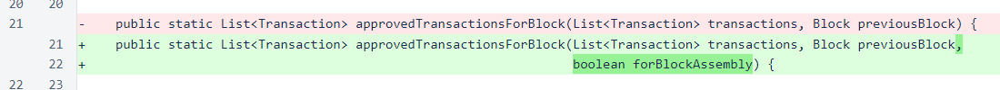In this method, if forBlockAssembly is true, a hard limit is placed on the number of transactions per block. This limit cannot be applied at this point for any case other than block assembly, because such application could interfere with the verifier or sentinel's ability to track the blockchain. When transactions must be removed, the smallest transactions are removed, leaving the larger transactions. Also, this process is applied after all other transaction-filtering processes. This eliminates potential manipulation by flooding a block with large, invalid transactions, and it also eliminates potential manipulation by flooding a block with small, valid transactions.
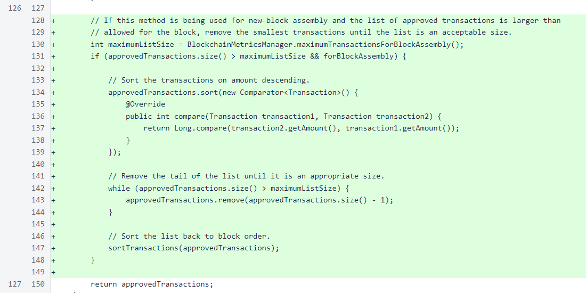In the balanceListForNextBlock() method of Block, a false value is passed for the new argument to bypass limiting.
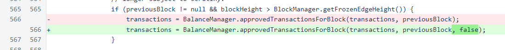In the setFrozenEdge() method of BlockManager, blocks are now registered with BlockchainMetricsManager. This is a new class that provides efficient access to blockchain information.
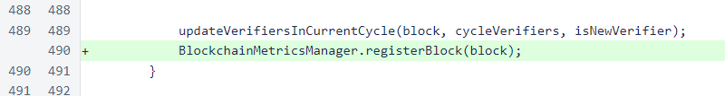The new BlockchainMetricsManager class provides guidance on how many transactions should be included in the current block. The baseline rate is 10 transactions per second, which is 70 transactions per block. Each additional Nyzo in standard transactions, on average over the previous cycle, increases the block capacity by one transaction.
At this point, it is worth noting that Nyzo was tested before release to support exceptionally high transaction rates — more than a hundred times the baseline rate. While these tests were run on a small testnet, a larger cycle does not negatively affect transaction processing capacity. A larger cycle does tend to place higher computational demands on verifiers, but those demands are not proportional to block size. In fact, the predictable nature of which verifier will likely be responsible for each block makes a larger cycle an asset with respect to sustained transaction throughput.
In short: do not misinterpret the low baseline rate as a sign that Nyzo cannot support significantly higher transaction rates. The baseline rate is simply a protection to keep verification profitable for verifiers. The ability to support larger blocks and higher transaction rates is mostly dependent on the computing capacity of verifiers, and this ensures that verifiers will not be forced to upgrade to more robust hardware to deal with huge, brief spikes in transactions or sustained periods of miniscule transactions.
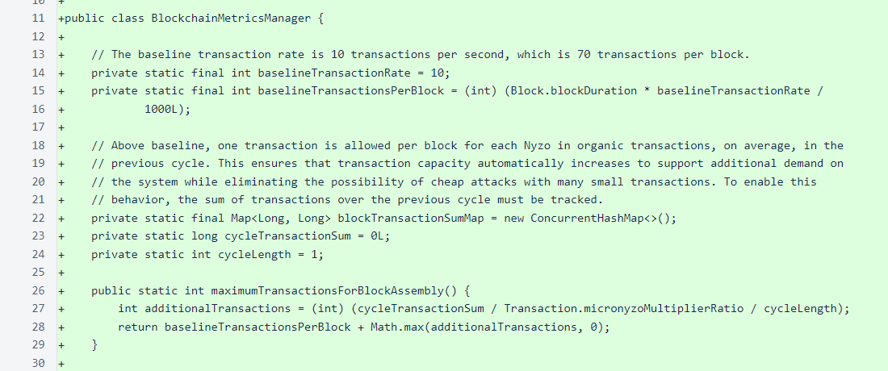The registerBlock() method updates the cycleTransactionSum and cycleLength from the provided block. This is called from the setFrozenEdge() method of BlockManager. While a full recalculation of the cycle sum from the map, superficially, seems inefficient, the combination of the map cleanup with the cycle sum calculation makes the process remarkably efficient. Also, avoidance of the use of a running sum eliminates the need to deal with complications due to skipped block heights.
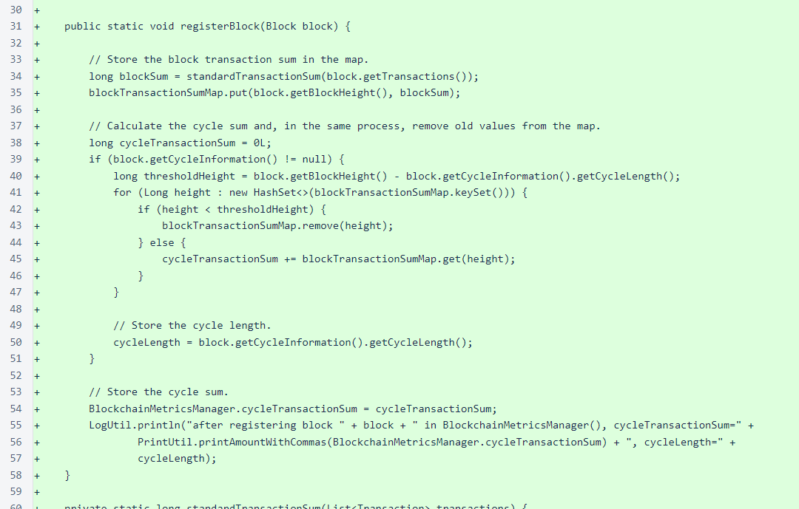The standardTransactionSum() helper method is used to improve readability of the registerBlock() method. Only standard transactions are considered in the cycle sum calculation.
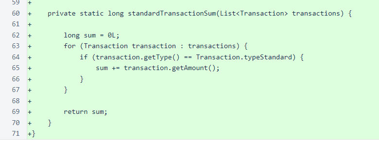In NewVerifierVoteManager, feedback has been improved when the calculated verifier is null.
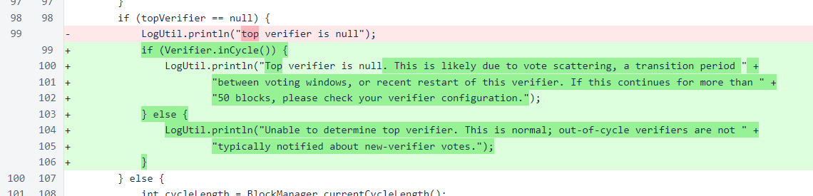In RunMode.setRunMode(), a log statement to the error stream has been added. This will be helpful when reviewing that stream to determine in what versions of the software errors occurred.
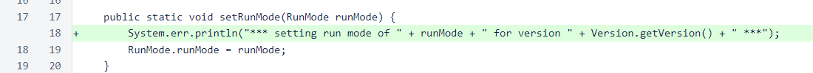In UnfrozenBlockManager, the maps created for individual heights have been changed to their concurrent versions. This is related to the previous change in RunMode. Previously, the UnfrozenBlockManager.registerBlock() method was intermittently throwing a ConcurrentModificationException. The delineation of versions in the error log will allow easy determination of whether this exception continues to be thrown now that these maps are concurrent.
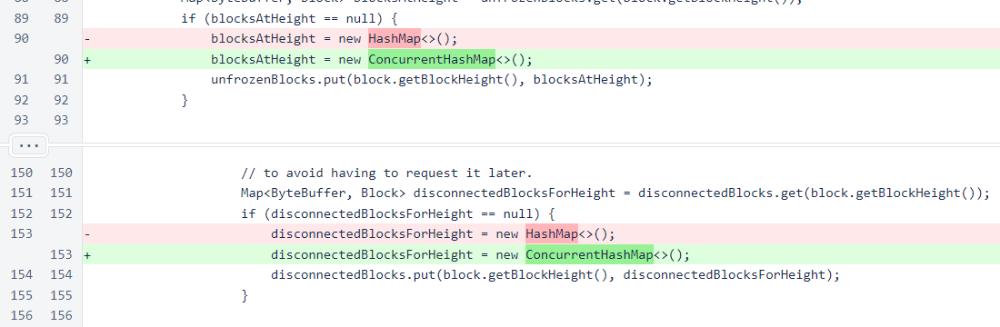In Verifier, a true value is provided for the forBlockAssembly argument of the BalanceManager.approvedTransactionsForBlock() method. This argument activates the new transaction-limiting functionality.
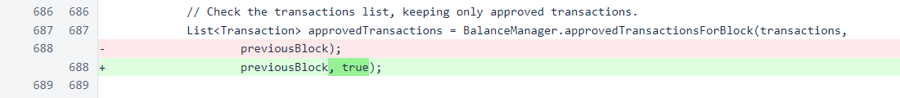In Sentinel, also, a true value is provided for the forBlockAssembly argument of the BalanceManager.approvedTransactionsForBlock method. This argument is inconsequential in an unmodified sentinel, as the sentinel should never have more than one transaction per block (the seed transaction).
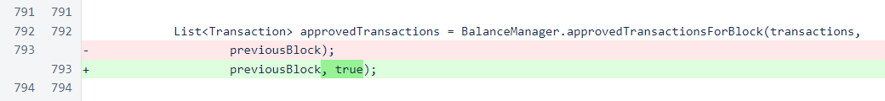The remaining changes are minor modifications that were added to support the new web wallet. They do not significantly affect the verifier or sentinel.
In PrintUtil, convenience methods have been added for printing Nyzo string identifiers.
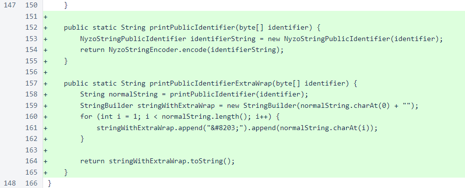In HtmlElementList, the argument is now returned from the add() method to allow for method chaining. This parallels the HtmlTag.add() method.
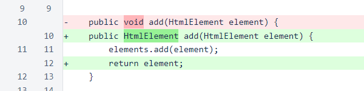In HtmlTag, a getAttr() method has been added. This is useful for modifying an attribute, as the attr() method replaces the previous value.
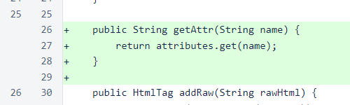Multiple tests were performed with Argo 746 running version 550 and Argo 752 running version 546. When 100 transactions were sent to Argo 752, they were all incorporated (blocks 5046422 and 5059533). When 100 transactions were sent to Argo 746, the smaller transactions were eliminated (blocks 5056081 and 5058997). The earlier block had 2 additional transactions above baseline due to the presence of a total of ∩3,487.820344 in standard transactions in the preceding cycle.